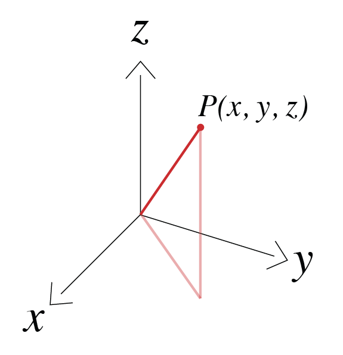
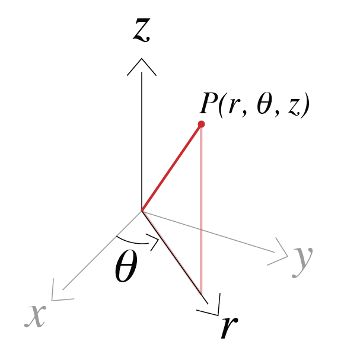
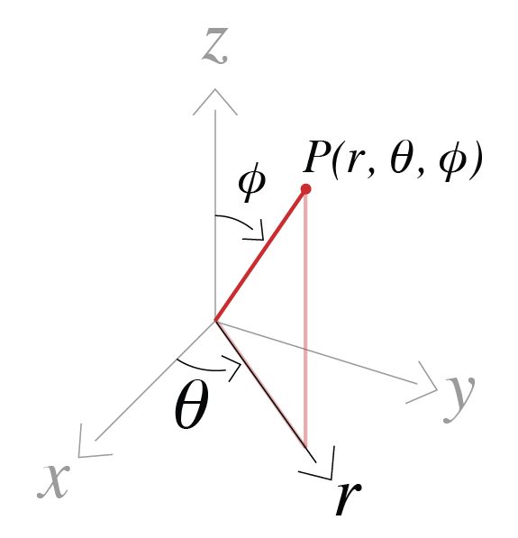

Conventions#
Coordinate systems#
Cartesian#
We use a right-handed coordinate system \((x, y, z)\) with z-positive up as shown in the Figure below.
{kind=link}
Cylindrical#
We again work with z-positive up and use \(\theta\) to denote the azimuthal angle, thus the coordinate system is defined as \((r, \theta, z)\).
{kind=link}
Spherical#
We use \(r\) for the radial direction, \(\theta\) for the azimuthal direction, and \(\phi\) for the polar direction as shown in the figure below.
{kind=link}
Fourier Transform#
For analysis and solutions in the frequency domain we use the \(e^{i \omega t}\) Fourier transform convention. Thus, we define our Fourier Transform pair as
\[ \begin{align}\begin{aligned}\begin{split}F(\omega) = \int_{-\infty}^{\infty} f(t) e^{- i \omega t} dt \\\end{split}\\f(t) = \frac{1}{2\pi}\int_{-\infty}^{\infty} F(\omega) e^{i \omega t} d \omega\end{aligned}\end{align} \]
where \(\omega\) is angular frequency, \(t\) is time, \(F(\omega)\) is the function defined in the frequency domain and \(f(t)\) is the function defined in the time domain.